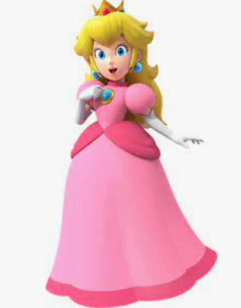

Princess Peach

About Her
Princess Peach is a fictional character from Super Mario Bros.
She is the head of state of the Mushroom Kingdom and uses her fantastic leadership to make decisions and guide her subjects.
Admirable Traits
- Despite facing numerous kidnapping attempts by Bowser, she remains resilient
- She takes on leadership roles in the Mushroom Kingdom
- She has a kind and compassionate nature